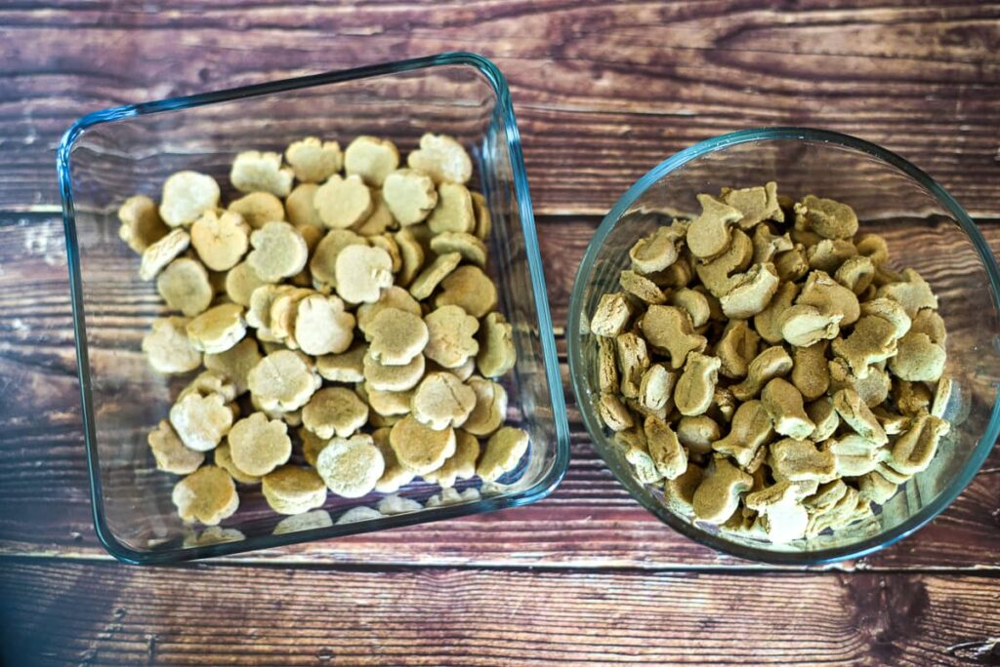

Tasty Salmon Cat Treat Recipe

Description
You really can't go wrong with an easy 3 ingredient treat.
Make something new and exciting for your kitty with these salmon cat treats.
Ingredients:
- 10 oz canned salmon
- 1 egg
- 2 cups flour
Instructions:
- Gently beat the egg.
- Pour the salmon (without draining it) into a food processor or blender. Blend until smooth.
- Pour all ingredients into a stand mixer. Mix until you have a smooth dough.
- Roll out the dough to about 1/4-inch thickness.
- Using a sharp knife or cookie cutter, cut out your cat treats.
- Bake the treats for 15 to 20 minutes at 350 F.
return home